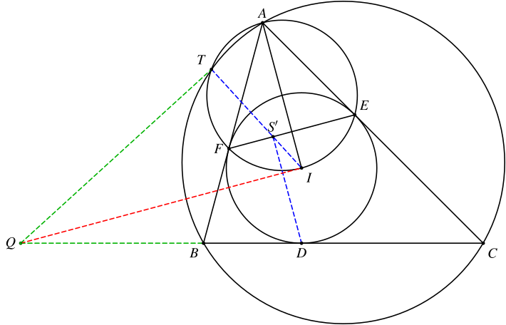
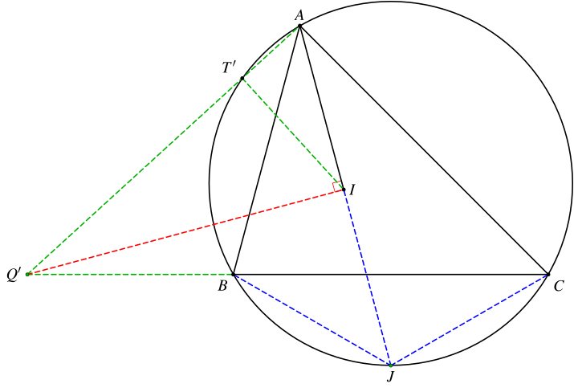
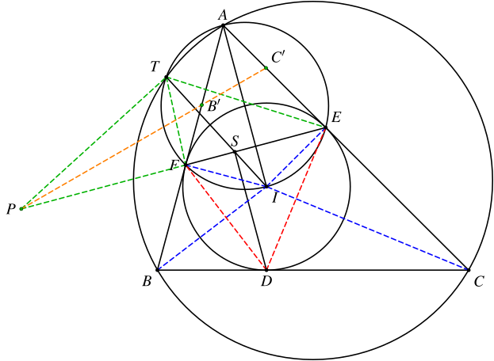
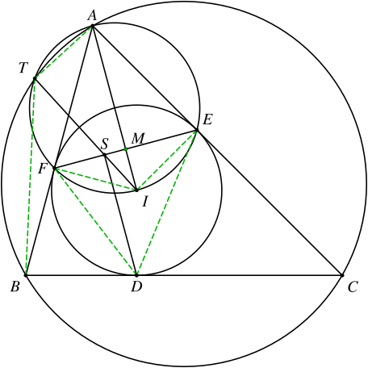

1. 题目
如图，已知 △ABC 的外接圆、内切圆分别为 ⊙O、⊙I，⊙I 与边 BC、CA、AB 分别切于点 D、E、F。过点 D 作 DS⊥EF 于点 S。若 ⊙O 与以 AI 为直径的圆的第二个交点为 T，证明：T、S、I 三点共线。
2. 解法一：同一法+配极
设 S′=EF∩TI，Q=AT∩BC。
以下极点、极线的讨论都是基于 ⊙I。

点 S′ 在 A 的极线 EF 上 ⟹ 点 A 在 S′ 的极线上。由 IS′⊥AT 可知 AT 为 S′ 的极线。
由 Q 在 S′ 的极线 AT 上、D 的极线 BC 上可知 Q 的极线为 DS′，因此 QI⊥DS′。因此
S=S′⟸DS′⊥EF⟸QI∥EF⟸QI⊥AI

作 IQ′⊥AI 交直线 BC 于 Q′。延长 AI 交 ⊙O 于 J，则 JI=JB=JC，即 J 是 △IBC 的外心。
由 Q′I⊥JI 可知 Q′I 是 △IBC 的外接圆的切线，因此
Q′I2=Q′B⋅Q′C
设直线 AQ′ 与 ⊙O 的另一个交点为 T′，则
Q′T′⋅Q′A=Q′B⋅Q′C=Q′I2
因此
△Q′T′I∼△Q′IA⟹∠Q′T′I=∠Q′IA=90∘
可知 ∠AT′I=90∘，因此 T′ 也在以 AI 为直径的圆上，故 T′ 与 T 重合，进而 Q′ 与 Q 重合。
因此 QI⊥AI，可知 S′ 与 S 重合，命题得证。
3. 解法二：相似+反演
设 P=AT∩EF。
易证
△DSE∼△BFI△DSF∼△CEI⟹IFSE=BFDS⟹IESF=CEDS⎭⎬⎫⟹SFSE=BFCE
又易证
△ATE∼△AEP△ATF∼△AFP⟹EPTE=AEAT=APAE⟹FPTF=AFAT=APAF⎭⎬⎫⟹TFTE=PFPE
由上面的相似还可知
AT⋅AP=AF2=AE2

我们以 A 为反演中心，AE 为反演半径建立反演变换，则 T↔P，因此 △ABC 的外接圆变为经过点 P 的直线。记 B、C 的反演点依次为 B′、C′，考虑 △AEF 和直线 B′C′，有
B′FAB′⋅PEFP⋅C′AEC′=1
因此
PFPE=B′FAB′⋅C′AEC′=AF−ABAF2ABAF2⋅ACAE2AE−ABAE2=AB−AFAF⋅AEAC−AE=BFCE
可知
TFTE=PFPE=BFCE=SFSE
因此 S 在 ∠ETF 的平分线上。
由 IE=IF 可知 TI 平分 ∠ETF，因此 S 在直线 TI 上。
4. 解法三：硬算
DeepSeek-V4-Pro-0813和Qwen3.8-Max都给出了这个证明方法。
设 △ABC 的内径为 r，外径为 R，∠CAB=2α，∠ABC=2β，∠BCA=2γ，则 α+β+γ=90∘，且
r=4Rsinαsinβsinγ
不妨设 AB<AC，则 β>γ。
考虑 △DEF，易知
DE=2rcosγ,EF=2rcosα,FD=2rcosβ,∠FDE=90∘−α,∠DEF=90∘−β,∠EFD=90∘−γ

因此
FSFMIM=DFcos∠DFE=2rcosβsinγ=21EF=rcosα=IFsin∠IFE=rsinα
可知
tan∠AIS=IMFM−FS=rsinαrcosα−2rcosβsinγ=sinαsin(β+γ)−2cosβsinγ=sinαsin(β−γ)
设 ∠TAI=θ，则
AIAT=sin∠IAFIF=sinαr=AIcos∠TAI=sinαrcosθ
又
AT=2Rsin∠TBA=2Rsin(2γ−(θ−α))=2Rcos(θ+β−γ)
因此
⟹sinαrcosθ=2Rsin(2γ−(θ−α))=2Rcos(θ+β−γ)⟹sinα4Rsinαsinβsinγ⋅cosθ=2Rcos(θ+β−γ)⟹2sinβsinγ⋅cosθ=cos(θ+β−γ)⟹[cos(β−γ)−cos(β+γ)]⋅cosθ=cosθcos(β−γ)−sinθsin(β−γ)⟹cos(β+γ)cosθ=sinθsin(β−γ)⟹cotθ=sinαsin(β−γ)
故
tan∠AIT=cot∠TAI=sinαsin(β−γ)=tan∠AIS
可知 T、S、I 三点共线。